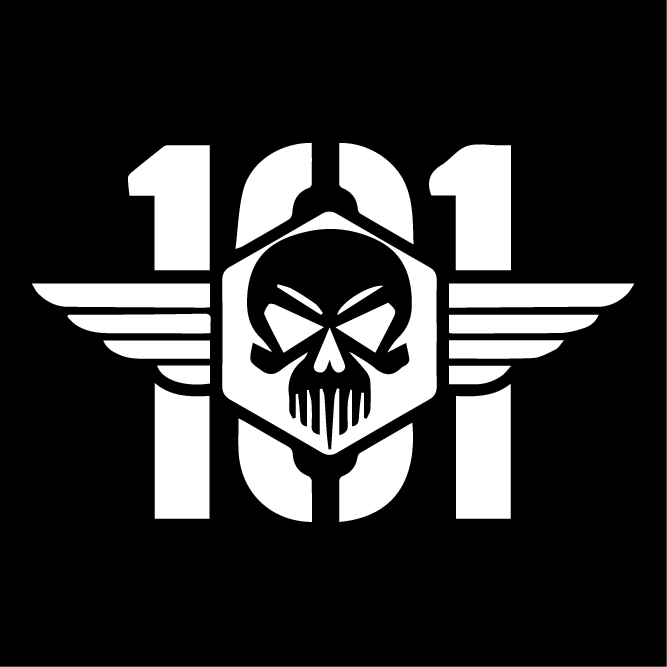

Column

101st “Hell” Battalion
Military Personnel File
| Codename: CC-07 “Cross” Name: ██████ ███████ Rank: Captain DOB: █████████ | “Let it Rain Hellfire.” -CC-07 “Cross” |
|---|
Duties:<
- NA “Cross” Company Captain
- Accepting/Rejecting 101st applications
- Moving divers into their new platoons and squads
- Dealing with treasonous offenders
- Ensuring the company is active and healthy
While “Cross’s” duties mainly involve paperwork these days, he still joins his troops for an occasional deployment. His leading skills are not only useful off of the battlefield but also on it.
Operational Conduct:
“Cross” is a wise captain that directs his company to victory by using his vast knowledge of both Terminids and Automatons to decimate them both. Always the hero, “Cross” will gladly take a bullet from a Heavy Devastator to save a fellow squad member.
The captain’s choice of weapons varies on which enemy he will be taking on. For Terminids, “Cross” chooses to use the SG-8 Punisher as his main with the GR-8 Recoilless Rifle as his support weapon. His grenade of choice to use against the Terminids is the Impact Incendiary Grenade. “Cross” uses the Recoilless to take down the heavily armed Terminids such as Chargers and Bile Titans.
For the Automaton front, he arms himself with the SMG-72 Pummeler as his main with the LAS-98 Laser Cannon to help take down Hulks. “Cross” also arms himself with the SH–20 Ballistic Shield to give injured squadmates cover while they stim up. The captain trades out his G-13 Impact Incendiary Grenades for the G-12 High Explosive Grenades.
While his other weapons change depending on who he is fighting, the P-4 Senator will always be his secondary weapon.
Just as his weapons differ between bugs and bots, “Cross’s” stratagems change as well. Automatons lay in oily puddles under his assault of Gatling Barrages and burn under the heat of the Orbital Laser. Terminids suffer a similar fate with Gatling Barrages and 110mm Rocket Pods. Railcannon Strikes are reserved for the heavy Chargers, Impalers, and Bile Titans.
CC-07 “Cross” is one of the greatest Helldivers aboard the 101st “Hell” Battalion. His effectiveness knows no bounds; no matter the front. If you are ever lost, then Captain “Cross” will show you the way to glory.
Military Career:
fore “Cross” enlisted to the Helldiver Corp, he lived on a farm on the planet Regnus in the Morgon System. “Cross” raised his three brothers and an eight-year-old sister and spent an abundance of hours as a steelworker in an Exosuit factory. When it was time to get home, he would ensure he spent his time with his family by cooking, cleaning, and playing games.
One day, while “Cross” was working on a Flamethrower mech, Regnus’s alarms sounded. The alarms called for all citizens to evacuate the planet ASAP. Illuminates were invading.
“Cross” hurried home, only to find his dead brothers among corpses of enemies. Only his sister was still breathing, coughing up blood. As he stood over her, screaming for her to not leave him, she put her hands on his face. A soft smile parted her lips before her last breath left her lungs. One final scream ripped through “Cross’s” throat as his little sister died in his arms. He was alone, and there was nothing he could do to bring them back.
As fate was cruelly toying with his soul, an Illuminate Hunter appeared behind “Cross.” The young man picked up a piece of rubble from the ground and chucked it angrily behind him, stunning the Hunter in the process. The sound of the rock hitting the Hunter caught “Cross’s” attention, causing him to realise he wasn’t as alone as he had thought himself to be. “Cross” quickly grabbed the P-4 Senator that he always kept on him and went to shoot the Illuminate.
“と回凵 丹尺ヨ 尸丹卞廾ヨ卞工亡, 工 山工しし 片工しし と回凵 廾ヨ尺ヨ 丹几句 几回山,” the Illuminate said as he grabbed “Cross’s” wrist, stopping him from firing.
This simple, incomprehensible sentence induced so much fear in “Cross’s” mind that a surge of adrenaline coursed through his veins, giving him the strength to break free from the Illuminate’s hold. “Cross’s” sudden surge in strength took the Illuminate by surprise, and he was able to get a shot off. The creature fell back with a gaping hole in its chest.
Two months after the incident on Regnus, “Cross” officially enlisted in the Helldiver Corp. “Cross” didn’t just join to bring justice to his family, but he also joined to ensure others wouldn’t suffer the same fate.
After receiving his armour and weapons, “Cross” was sent off to be trained. He flew through his Cadet training due to his fast reflexes and warrior’s instinct. “Cross” quickly became a Private and was able to get his own Cryotube as he waited for his first official deployment.
It was only after a hundred years that the new Helldiver went on his first operation on Crimsica in the Draco Sector. “Cross” was unaware of the time that had passed along with the evolution of bugs into the grotesque Terminids that we know today. The new lifeforms did not faze him for he was focused on bringing justice to the galaxy by any means. With this unwavering focus, “Cross” was able to complete every mission and side objectives in the operation. No bug hole was left open. No leaf was left unturned.
He continued diving and as days turned into weeks and weeks turned into months. He realised that something had drastically changed. On the other side of the galaxy, the threat was not the Cyborgs, but the Automatons. Most of all, the Illuminates were no more, and they left no trace of their existence for him to follow.
Noticing these differences, “Cross” could finally understand just how long he had been frozen. Anger rose with the question as to why he was kept frozen for so long, but he calmed himself with the notation that Super Earth kept him frozen for something more dangerous to come along.
Recruitment to the 101st “Hell” Battalion:
One day, “Cross” was sent on an operation on Meridia with three other Helldivers that were not like those that he usually dived with. All three had call signs and an emblem embroidered on their armour.
Silence fell over the comms as the mission started. “Cross” tried to communicate to the other three divers, but his words seemed to be falling on deaf ears. Upon closer inspection, “Cross” realised the other three divers were from a battalion.
“I must be on the wrong frequency,” “Cross” muttered under his breath with annoyance laced in his tone.
“Terminid Breach! Get your ass up and make sure the tower doesn’t get too damaged,” one of the other squad members finally yelled over the comms to “Cross.” Before the last words could leave the squadmate’s mouth, Terminids had begun to swarm the area. The fellow Helldivers quickly cleared out the swarm in record time with the best communication amongst them that “Cross” had ever experienced.
When the wind settled down, they regrouped at the tower to get its defences back up and running again, calling in a resupply and fresh turrets.
“You’re not doing bad, kid. Especially for being by yourself for most of the mission,” the Helldiver that seemed to be the leader said to him.
“What the hell though? You didn’t let me know before you threw down your Eagles near me, let alone on me!” “Cross” snapped.
“I apologise about that. We’ll keep you in the loop from now on,” he replied before giving him the comms channel code for him to join.
As they were setting up the third tower defence, there was another bug breach. At first, they were fighting and defending without issues, but they quickly became overwhelmed. No one had expected the amount of devastation it was about to bring. Bile Titans and Chargers were swarming the place; determined to destroy the defences the divers had put in place. While they were able to take out some of the Terminids, they were quickly becoming overwhelmed with chaos.
“Cross’s” EAT-17 Expendable Anti-Tank was still on its way down to the surface when a Charger rushed at the group. The Charger was stunned multiple times by G-23 stun Grenade, but the beast ran past him and directly into the diver behind him, killing him instantly upon impact. “Cross’s” E.A.T. landed just as the Charger turned its attention to him. He quickly grabbed the E.A.T. and shot the brute directly into its face, killing it.
A sudden scream rang out as another Helldiver became covered in the acidic bile from a Bile Titan after she had missed a shot with her LAS-99 Quasar Cannon. Unluckily for her, her death wasn’t as quick as the previous diver’s as the bile ate away at flesh and bone.
“Cross” was left with only one other Helldiver.
“I have a Recoilless. Grab my backpack, and we’ll clear out this place,” “Cross” called. The Helldiver nodded, and “Cross” started blasting away. Chargers were beheaded, Titans exploded, and Brood Commanders fell to the divers’ shots.
All was going well until a Spewer’s sac exploded on them, blocking their vision. “Cross” and the other diver had no choice but to throw down an SOS signal as Bile Titan after Bile Titan crawled out of the bug breaches. The two had to book it, trying to get some distance between themselves and chaos. The SOS finally brought in two Hellpods that came crashing down on two of the Bile Titans, killing them instantly.
Finally, with the newly arrived help, they were able to clear out the breach and take a deep breath. The main objective was completed, and they cheered in victory and in relief.
The two Helldivers that had joined also had callsign on their arm. “Cross” was finally close enough to be able to read them. All three of them had “101st” embroidered. The two new divers were Privates while the one he started the mission with was a Sergeant Major.
“What does the PK of your call sign stand for,” “Cross” asked the commanding officer.
The three divers chuckled at the question before taking a seat. “That’s ‘PeaceKeeper.’ Everyone knows that. How did you not-” but, as the Helldiver was finishing his sentence, he realised that “Cross” did not have a regular set of armour. It was from the first Galactic War, a relic of the long lost past. The look on their face shifted from amused to utterly baffled. The diver realised he was as old as time itself, and most hadn’t lived even half the time that “Cross” had lived.
As the Pelican-1 got them back on the Super Destroyer, “Cross” was hammered by questions until they finally left him alone.
“Peacekeeper” gave him a card before returning to his ship. “Join the 101st ‘Hell’ Battalion today!” was written on one side while the other side gave the location of the recruitment camp.
After a few days of internal monologue about the invitation, “Cross” decided to actually check out the 101st. After an evaluation, he passed with flying colours, impressing his drill sergeant. He was finally given his very own callsign: PVT-9928 “Cross.”
He now had a reliable place to find other divers to join him on missions. He now could learn new techniques. He could now form lasting friendships. He now had a new family.
Trauma and PTSD:
The first major trauma “Cross” experienced in his life was when he returned home to find his family slaughtered. As he held his sister while she took her last breath, something in him broke. In that moment, everything he had ever known came crumbling down around him. The images of their bodies, the look on his sister’s face, all of it would forever be engraved into his memory. All of it is the fuel that stokes the fire inside of him to keep fighting. He doesn’t fight just to avenge them; he fights to ensure others don’t go through what he went through.
Being frozen for over a hundred years is something that can easily shatter the mind of most.
When “Cross” awoke from his cryofreeze, everything around him had changed. The shock of it all threw him off for a bit. He wasn’t able to help end the First Galactic War, and he hadn’t been there for the evolution that the bugs had undergone to become Terminids. He had awoken to new enemies—new threats—and no idea how to properly handle them.
Watching squadmates die in ways he had never seen before was something that would also be forever engraved into his mind. The way the female diver melted before his eyes haunted his dreams almost as frequently as his family’s death. Everything that he had experienced from the moment he woke up moulded him into the man he is today.
Service in the 101st:
When 9928-”Cross” was accepted as Private after training, he was eager to deploy with his newfound comrades—always ready to dive right into the action. “Peacekeeper,” Sergeant Major at the time, quickly recognised his leadership abilities, and “Cross” was made Specialist not even after a week of joining the 101st. His newfound friends in the battalion were always looking up to him. He was known throughout the battalion as a veteran of the first war and an experienced diver.
Now able to host his own deployments, he revealed himself as a true leader. The operations always finished in a success and troops were coming back with a smile. Slowly, he was getting more and more akin to the people around him, gaining trust and friendship in the process. His newfound confidence and praise made him skip becoming a Corporal, and he went directly to being a Sergeant of his own squad, Stim squad. To this day, it still exists under the same name and is respected throughout the company.
With his new rank, he ran a lot of deployments for everyone he had a chance to meet. From his own squad to the rest of the battalion, diving with the 101st was the best time of his life.
Now a Sergeant under a new Sergeant Major, “Ukill,” “Cross” developed a lasting friendship with him. With him earning the trust of “Ukill,” he followed behind “Ukill” in rank, becoming Sergeant Major, Second Lieutenant, and then First Lieutenant.
When “Ukill” was promoted to Battalion Major, “Cross” was supposed to follow like always, but Automatons forces had shot down his Super Destroyer. He was the only survivor of the crash, and he spent multiple weeks fighting alone with all of the supplies he could find. A search party was sent from the 101st, but finding his location was no easy task.
“Cross” was doing an outstanding job defending himself from Automaton forces, but the supplies were quickly running out. He gathered parts back from the crashed Pelicans and Eagles or other Super Destroyers on the planet, and he slowly built back a ship capable of getting into low orbit.
After one last hard-fought battle alone against swarms of Automatons, he started the engine and flew off in the distance. “Cross” quickly found another Destroyer and headed straight for it. By some miracle, this ship was “Ukill’s” ship. Reunited with the 101st once again, “Cross” received the necessary medical care that he so desperately required. Now that he was back where he belonged, he was able to finally be promoted to Company Captain.
The rest is history.
Credits:
Author : SGT-1730 “Tea”
Co-Author & Editor : SM-0225 “Walnut”
Minor Editors : SGT-7777 “Sentinel”